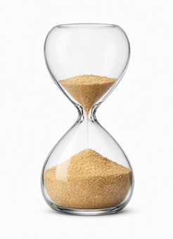

This note records a simple calendrical fact: Rosh Hashanah and Coptic New Year (Nayrouz) fall on the same civil date this year.
Rosh Hashanah is the Jewish Judgment Day. Coptic New Year celbrates a Resurrection Day motif.
In the ebook, nun and shin are defined as two linked actions:
Normally these two actions are sequential — first the sorting (nun), then the fire (shin).
But this year’s concurrence does something different: Resurrection Day (nun) was moved forward into the same civil date as Judgment Day (shin).
This means the fish‑sorting and the fire occur together, symbolically:
In the ebook’s structure, this date‑overlap matches a pattern found across scripture. The Qur’an repeats the same idea seven times: the adversary is pushed out but given a delay — not until Judgment Day, but until Resurrection Day. Revelation describes that delay as a thousand‑year period of restraint, the “black hole” between the two moments.
Surah 68 follows the same pattern. It begins with Nun, the sign of a fish and judgement, and moves toward Shin, the sign of Divine Fire, while telling the story of people who refused the harvest they were assigned. In that framework, Nun and Shin are two parts of one structure: sorting and exposure.
So when Nayrouz and Rosh Hashanah land on the same date this year, it fits that same pattern. It marks a moment where Resurrection Day and Judgment Day appear together — the deferred moment and the appointed moment aligned.
Only God knows the Day and the Hour, and only Allah brings about what is inevitable - these two statements mean the same thing. The Qur’an says He keeps His promises without fail, including the promise of delay. Within that structure, it is reasonable that the fulfillment of that promise could appear as the two days align into one.
This page records that specific alignment this year 2026. It makes no prediction and no doctrinal claim. It simply notes that the theme described in the ebook — fish and fire united in one moment — appears symbolically in the calendar this year.